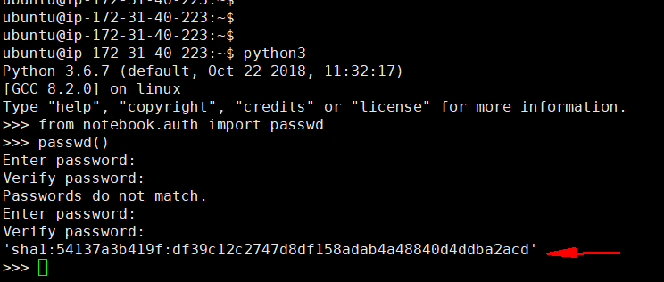
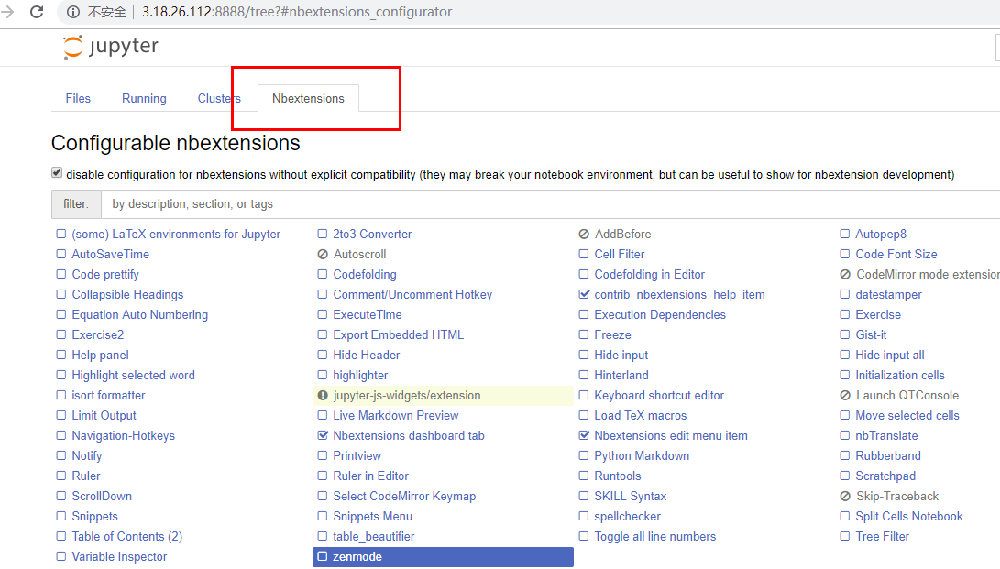
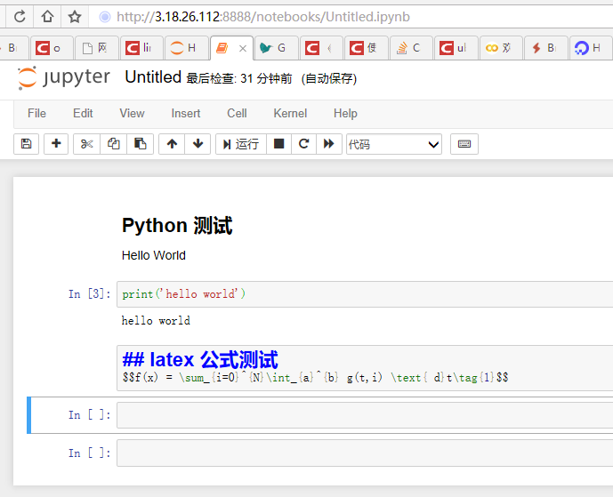
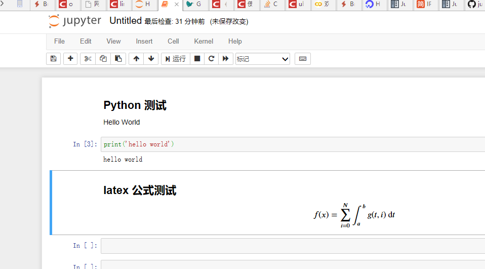
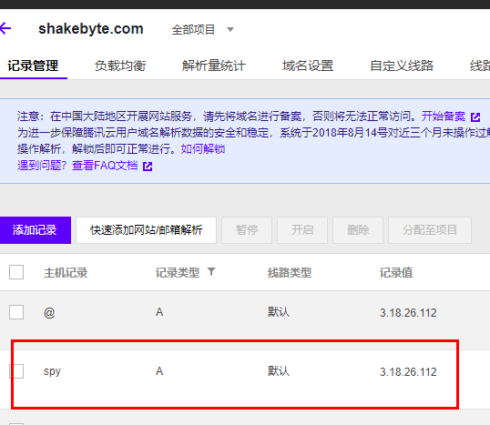
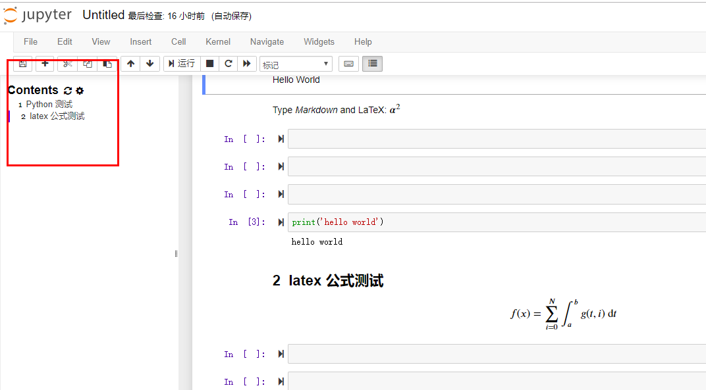
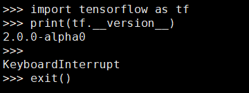

[Python] Jupyter 安装与配置、并支持tensorflow2.0

文章目录
Jupyter
Jupyter Notebook作为一种web应用程序，为交互式计算提供了一个命令行。 该工具可以使用多种语言，包括Python，Julia，R，Haskell和Ruby。 它经常用于处理数据，统计建模和机器学习。本文记录了笔者自己安装、配置、测试jupyter的过程（本以以配置python语言环境为例，其他语言类似）。
系统环境
- 主机类型：AWS(亚马逊云)
- 操作系统：Ubuntu 18.04
- 语言环境：python 3.6.7
- 包管理工具：pip
- 域名服务商：tencent(腾讯云)
安装步骤
安装jupyter
|
|
创建和修改jupyter配置文件
使用如下命令生成配置文件jupyter_notebook_config.py
|
|
创建jupyter的主要文件存储目录
|
|
修改该文件
1
|
sduo vim home/ubuntu/.jupyter/jupyter_notebook_config.py #其中ubuntu是用户名，请自行修改 |
确保jupyter_notebook_config.py配置文件中几个地方如下所示
1 2 3 4 5 6 7 |
c.NotebookApp.allow_remote_access = True c.NotebookApp.enable_mathjax = True c.NotebookApp.ip = '0.0.0.0' c.NotebookApp.notebook_dir = '/home/jupyterdir' c.NotebookApp.open_browser = False c.NotebookApp.password = u'sha1:c8825ad2cdb8:7dd9d3070453aae5bb438cd89bc9f3d06d072' c.NotebookApp.port = 8888 |
上面配置中password 生成办法如下：
从操作系统进入python3, 导入库 from notebook.auth import passwd
然后输入password()来设置密码，从而得到加密字符串

由于配置文件长达760多行，可以使用如下命令查看配置文件是否修改正确，因为意外字符会使得Jupyter notebook 无法正常启动。
|
|
设置权限
设置jupyter运行时临时目录权限
|
|
启动
查看启动是否会报错
|
|
如果没有报错，怎进入下一步
为jupyter安装和配置导航栏
安装这个jupyter_contrib_nbextensions插件时，先停止jupyter notebook的运行。
|
|
再次jupyter notebook启动，通过浏览器打开，配置jupyter_nbextensions，勾选table of contents。其中3.18.26.112是我的AWS的主机上的弹性IP，即公网IP。

测试
打开或者新建一个ipynb文件，输入文本行和代码测试配置的jupyter notebook 
确认运行情况
查看代码能否执行，公式能否渲染 
配置域名
在腾讯云域名解析服务中，添加A记录 
域名访问jupyter notebook
启动 jupyter notebook 服务，使用命令
nohup jupyter notebook > /dev/null 2>&1 &nohup 确保这个进程在断开 ssh 连接后依旧运行，& 让进程在后台运行, 其中2>&1 标准输出和重定向。如果想终止 notebook 应用，请找到含有 jupyter-notebook 的进程，并用 kill 杀掉它。
最终效果

支持tensorflow 2.0
ubuntu 系统下使用如下命令：
|
|

至此， Jupyter notebook 完成安装，并配置了导航窗口和域名访问，最后支持tensorflow 2.0环境，常见jupyter notebook 环境配置完毕。
参考材料：https://jupyter-notebook.readthedocs.io/en/latest/index.html
文章作者 任海军
上次更新 2019-05-22
许可协议 MIT